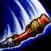

Skills
-

PELE DE PEDRA
Wukong recebe Armadura e Regeneração de Vida máxima cumulativas quando luta contra Campeões e monstros.
-

GOLPE DESTRUÍDOR
O próximo ataque de Wukong recebe Alcance de Ataque, causa dano adicional e reduz a Armadura do alvo por alguns segundos.
-

GUERREIRO TRAPAÇEIRO
Wukong fica Invisível e avança em uma direção, deixando para trás um clone que atacará inimigos próximos.
-

RESPLANDOR DAS NUVENS
Wukong avança em direção ao inimigo-alvo e conjura imagens de si próprio para atacar inimigos próximos, causando dano aos atingidos.
-

CICLONE
Wukong estende seu cajado e gira repetidamente, recebendo Velocidade de Movimento. Inimigos atingidos sofrem dano e são arremessados ao ar.